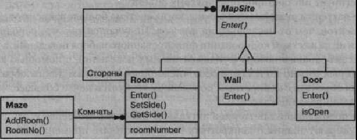

Глава 3. Порождающие паттерны
Порождающие паттерны проектирования абстрагируют процесс инстанцирования. Они помогут сделать систему независимой от способа создания, композиции и представления объектов Паттерн, порождающий классы, использует наследование, чтобы варьировать инстанцируемый класс, а паттерн, порождающий объекты, делегирует инстанцирование другому объекту.
Эти паттерны оказываются важны, когда система больше зависит от композиции объектов, чем от наследования классов. Порождающие паттерны проектирования абстрагируют процесс инстанцирования. Они помогут сделать систему независимой от способа создания, композиции и представления объектов. Паттерн, порождающий классы, использует наследование, чтобы варьировать инстанцируемый класс, а паттерн, порождающий объекты, делегирует инстанцирование другому объекту. Получается так, что основной упор делается не на жестком кодировании фиксированного набора поведений, а на определении небольшого набора фундаментальных поведений, с помощью композиции которых можно получать любое число более сложных. Таким образом, для создания объектов с конкретным поведением требуется нечто большее, чем простое инстанцирование класса.
Для порождающих паттернов актуальны две темы. Во-первых, эти паттерны инкапсулируют знания о конкретных классах, которые применяются в системе. Во-вторых, скрывают детали того, как эти классы создаются и стыкуются. Единственная информация об объектах, известная системе, - это их интерфейсы, определенные с помощью абстрактных классов. Следовательно, порождающие паттерны обеспечивают большую гибкость при решении вопроса о том, что создается, кто это создает, как и когда. Можно собрать систему из «готовых» объектов с самой различной структурой и функциональностью статически (на этапе компиляции) или динамически (во время выполнения).
Иногда допустимо выбирать между тем или иным порождающим паттерном. Например, есть случаи, когда с пользой для дела можно использовать как прототип, так и абстрактную фабрику. В других ситуациях порождающие паттерны дополняют друг друга. Так, применяя строитель, можно использовать другие паттерны для решения вопроса о том, какие компоненты нужно строить, а прототип часто реализуется вместе с одиночкой.
Поскольку порождающие паттерны тесно связаны друг с другом, мы изучим :разу все пять, чтобы лучше были видны их сходства и различия. Изучение будет нестись на общем примере - построении лабиринта для компьютерной игры. Правда, и лабиринт, и игра будут слегка варьироваться для разных паттернов. Иногда целью игры станет просто отыскание выхода из лабиринта; тогда у игрока дет лишь один локальный вид помещения. В других случаях в лабиринтах могут встречаться задачки, которые игрок должен решить, и опасности, которые ему предстоит преодолеть. В подобных играх может отображаться карта того участка лабиринта, который уже был исследован.
Мы опустим детали того, что может встречаться в лабиринте и сколько игроков принимают участие в забаве, а сосредоточимся лишь на принципах создания лабиринта. Лабиринт мы определим как множество комнат. Любая комната «знает» о своих соседях, в качестве которых могут выступать другая комната, стена или дверь в другую комнату.
Классы Room (комната), Door (дверь) и Wall (стена) определяют компоненты лабиринта и используются во всех наших примерах. Мы определим только те части этих классов, которые важны для создания лабиринта. Не будем рассматривать игроков, операции отображения и блуждания в лабиринте и другие важные функции, не имеющие отношения к построению нашей структуры.
На диаграмме ниже показаны отношения между классами Room, Door и Wai 1.
У каждой комнаты есть четыре стороны. Для задания северной, южной, восточной и западной сторон будем использовать перечисление Direction в терми¬нологии языка C++:
enum Direction {North, South, East, West};
В программах на языке Smalltalk для представления направлений воспользуемся соответствующими символами.
Класс MapSite - это общий абстрактный класс для всех компонентов лабиринта. Определим в нем только одну операцию Enter.
Когда вы входите в комнату, ваше местоположение изменяется. При попытке затем войти в дверь может произойти одно из двух. Если дверь открыта, то вы попадаете в следующую комнату. Если же дверь закрыта, то вы разбиваете себе нос:
class MapSite {
public:
virtual void Enter () = 0;
};
Операция Enter составляет основу для более сложных игровых операций. Например, если вы находитесь в комнате и говорите «Иду на восток», то игрой определяется, какой объект класса Map Si te находится к востоку от вас, и для него вызывается операция Enter. Определенные в подклассах операции Enter «выяснят», изменили вы направление или расшибли нос. В реальной игре Enter могла бы принимать в качестве аргумента объект, представляющий блуждающего игрока.
Room - это конкретный подкласс класса MapSite, который определяет ключевые отношения между компонентами лабиринта. Он содержит ссылки на другие объекты MapSite, а также хранит номер комнаты. Номерами идентифицируются все комнаты в лабиринте:
class Room : public MapSite {
public:
Room(int roomNo);
MapSite* GetSide(Direction) const;
void SetSide(Direction, MapSite*);
virtual void Enter();
private:
MapSite* _sides[4];
int _rbomNumber;
};
Следующие классы представляют стены и двери, находящиеся с каждой стороны комнаты:
class Wall : public MapSite {
public:
Wall();
virtual void Enter();
};
class Door : public MapSite {
public:
Door(Room* = 0, Room* = 0);
virtual void Enter();
Room* OtherSideFrom(Room*);
private:
Room* _rooml;
Room* _room2;
bool _isOpen;
};
Но нам необходимо знать не только об отдельных частях лабиринта. Определим еще класс Maze для представления набора комнат. В этом классе есть операция RoomNo для нахождения комнаты по ее номеру:
class Maze {
public:
Maze();
void AddRoom(Room*);
Room* RoomNo(int) const;
private:
// ...
};
RoomNo могла бы реализовывать свою задачу с помощью линейного списка, хэш-таблицы или даже простого массива. Но пока нас не интересуют такие детали. Займемся тем, как описать компоненты объекта, представляющего лабиринт.
Определим также класс MazeGame, который создает лабиринт. Самый простой способ сделать это - строить лабиринт с помощью последовательности операций, добавляющих к нему компоненты, которые потом соединяются. Например, следующая функция-член создаст лабиринт из двух комнат с одной дверью между ними:
Maze* MazeGame::CreateMaze () {
Maze* aMaze = new Maze;
Room* rl = new Room(l);
Room* r2 = new Room(2);
Door* theDoor = new Door(rl, r2);
aMaze->/pre>AddRoom(rl);
aMaze->AddRoom(r2);
rl->SetSide(North, new Wall);
rl->SetSide(East, theDoor);
rl->SetSide(South, new Wall);
rl->SetSide(West, new Wall);
r2->SetSide(North, new Wall);
r2->SetSide(East, new Wall);
r2->SetSide(South, new Wall);
r2->SetSide(West, theDoor);
return aMaze;
Довольно сложная функция, если принять во внимание, что она всего лишь создает лабиринт из двух комнат. Есть очевидные способы упростить ее. Например, конструктор класса Room мог бы инициализировать стороны без дверей заранее. Но это означает лишь перемещение кода в другое место. Суть проблемы не в размере этой функции-члена, а в ее негибкости. В функции жестко «зашита» структура лабиринта. Чтобы изменить структуру, придется изменить саму функцию, либо заместив ее (то есть полностью переписав заново), либо непосредственно модифицировав ее фрагменты. Оба пути чреваты ошибками и не способствуют повторному использованию.
Порождающие паттерны показывают, как сделать дизайн более гибким, хотя и необязательно меньшим по размеру. В частности, их применение позволит легко менять классы, определяющие компоненты лабиринта.
Предположим, что мы хотим использовать уже существующую структуру в новой игре с волшебными лабиринтами. В такой игре появляются не существовавшие ранее компоненты, например DoorNeedingSpell - запертая дверь, для открывания которой нужно произнести заклинание, или Enchant edRoom - комната, где есть необычные предметы, скажем, волшебные ключи или магические слова. Как легко изменить операцию CreateMaze, чтобы она создавала лабиринты с новыми классами объектов?
Самое серьезное препятствие лежит в жестко зашитой в код информации о том, какие классы инстанцируются. С помощью порождающих паттернов можно различными способами избавиться от явных ссылок на конкретные классы из кода, выполняющего их инстанцирование:
- если CreateMaze вызывает виртуальные функции вместо конструкторов для создания комнат, стен и дверей, то инстанцируемые классы можно подменить, создав подкласс MazeGame и переопределив в нем виртуальные функции. Такой подход применяется в паттерне фабричный метод;
- когда функции CreateMaze в качестве параметра передается объект, используемый для создания комнат, стен и дверей, то их классы можно изменить, передав другой параметр. Это пример паттерна абстрактная фабрика;
- если функции CreateMaze передается объект, способный целиком создать новый лабиринт с помощью своих операций для добавления комнат, дверей и стен, можно воспользоваться наследованием для изменения частей лабиринта или способа его построения. Такой подход применяется в паттерне строитель;
- если CreateMaze параметризована прототипами комнаты, двери и стены, которые она затем копирует и добавляет к лабиринту, то состав лабиринта можно варьировать, заменяя одни объекты-прототипы другими. Это паттерн прототип.
Последний из порождающих паттернов, одиночка, может гарантировать наличие единственного лабиринта в игре и свободный доступ к нему со стороны всех игровых объектов, не прибегая к глобальным переменным или функциям. Одиночка также позволяет легко расширить или заменить лабиринт, не трогая сущеcтвующий код.